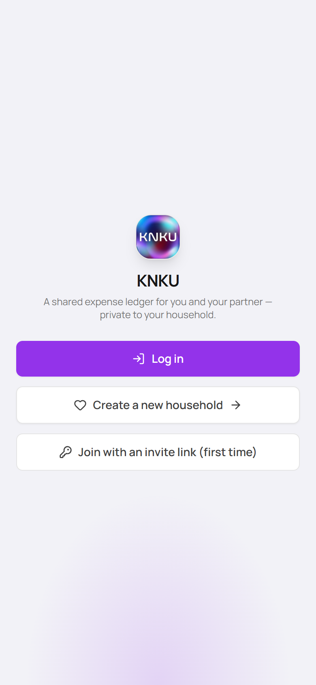
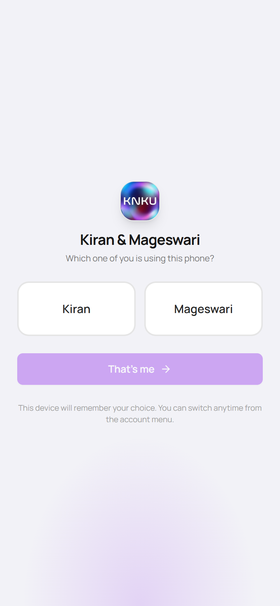
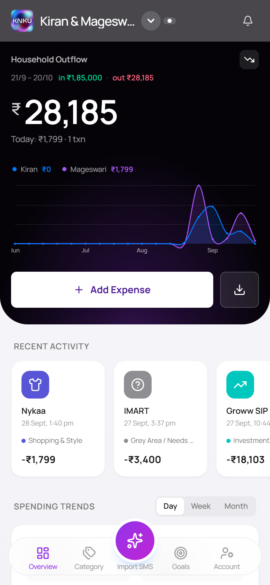
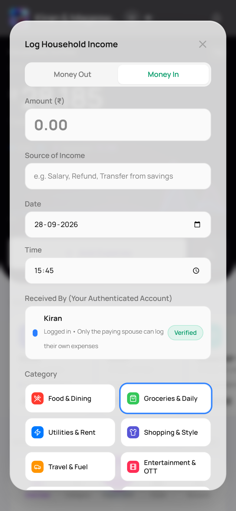
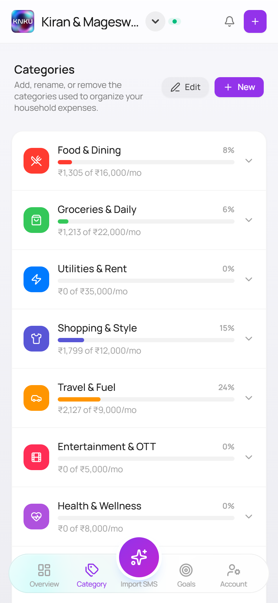
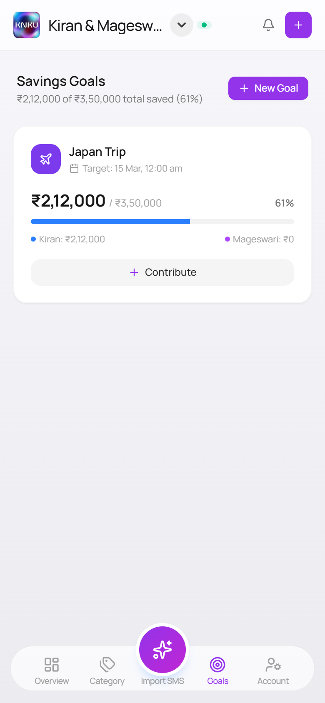
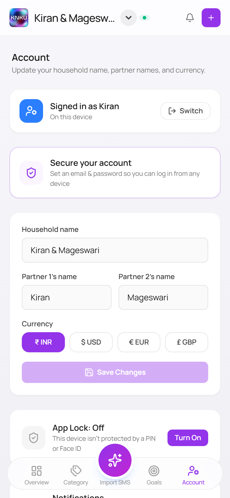
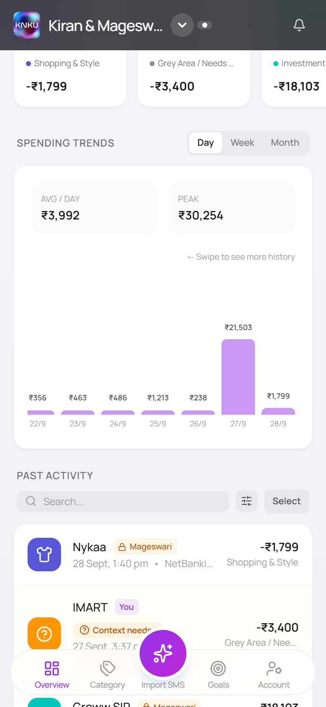

A shared ledger that parses the bank’s own SMS as it lands, so the month-end spreadsheet never has to be rebuilt. That only works if the automatic version can be trusted without a second look — and four parts of the interface were quietly handing that checking back. This is what it took to fix each one.
The routine was manual twice over: write down what you spent as you spent it, then turn two people’s scattered entries into something that actually showed where the money went. Not hard. Just enough friction, often enough, that the logging slipped and the month-end rebuild got dreaded.
KNKU removes both steps — parse the transaction from the bank’s own SMS as it lands, keep a dashboard that is always current. But that only helps if the automatic version can be trusted without a second look. Four parts of the interface were quietly failing that test, each one teaching the couple to check the app by hand — which is the chore it was built to end.
The one thing a glance at a row needs to answer — who did I pay — was clipping mid-word or replaced outright by a bank logo, forcing a second look the automation was supposed to make unnecessary.
6 of 6 sampled titles clipped“Overspent by ₹X” compared spending to income that structurally couldn’t land in the same window — wrong most months, stated as fact, the kind of thing you’d start mentally correcting yourself.
Salary falls outside the 21–20 cycleA “Recurring” badge was applied by timing alone — two purchases a month apart — with nothing to say the system wasn’t sure, which is precisely the kind of claim you end up re-verifying by hand.
46 flagged, 1 ever confirmed by a personThe project started as exactly what the problem statement above describes — two people trying to keep an honest shared ledger. The Tamil word for account, or calculation, is kanakku (கணக்கு). Stripped to its consonants for a name that reads cleanly in an app icon, it became KNKU.
Before zooming into what got fixed, the whole loop the household actually lives in — set up once, then almost never open the keyboard again.







A tool that reads your finances and shows you a number earns trust by being right on real inputs, repeatedly — not by looking finished. Every derivation here exists because a first pass that looked correct turned out, on the household’s actual data, not to be: three row-layout fixes in a row, five versions of the outflow card, forty-six false “recurring” flags found only by running the logic against 640 real transactions. None of that surfaces from a design file.
It is also why the scope kept growing. Fixing the transaction row surfaced the icon problem; fixing that surfaced how much of the ledger was unrecognised merchants; watching real usage surfaced that income had no home in the UI at all. And the checking went wider than the two people building it — testing ran across spouse, friends, parents and elders, because a household finance app has no excuse to work only for the most technical person in the house.
The transaction row is the single most-viewed piece of the app. In a 342px-wide row, the title column was measuring 110px — and every fix attempt at first traded one failure for a different one.
The left block carried min-w-0 but no flex-1, so it sized to whatever the right column left over — and the right column, shrink-0, took whatever the longest category name (“Grey Area / Needs Context”, 122px) demanded first.
Giving the title flex-1 worked — but the metadata line (date · payment · owner) had no width limit of its own, so it now ran straight under the amount column instead of stopping before it.
Adding overflow-hidden stopped the collision — and started hard-clipping the line mid-word instead, with no ellipsis and a dangling separator: “Pluxee Ca”.

The owner name in the meta line was already shown as a badge one line above — deleting the duplicate freed 68px on its own. The category name got a responsive width cap instead of an unbounded one, so it stops driving the layout without disappearing.
Per-merchant icons exist so the list scans at a glance. Instead the list read as a wall of identical bank-blue squares — because the icon logic was answering who paid instead of who got paid.
Title, bank name, and notes were joined into one string and matched against a rule list, first hit wins. /hdfc/ sits 12th of 29 rules — ahead of Amazon, Myntra, Domino’s, BookMyShow. An Amazon order paid on an HDFC card rendered the HDFC logo.
Matching title, then notes, then bank — in that order, each on its own — correctly resolved every merchant the rule list already knew. It did nothing for the far more common case: a merchant the list didn’t recognise, which still fell through to the bank as a fallback.
The fallback to the bank field now excludes bank-brand rules entirely — it can still resolve a UPI app named there (GPay, PhonePe), but never the bank itself. An unrecognised merchant falls to its category glyph, which carries more information than a repeated logo ever did.
The outflow card is the first thing either person sees. What it should say — spending only, income only, or a verdict on both — took five real iterations, most of them decided by looking at what it actually said against real weeks.
The original card, before this pass: a single figure, a today line, a wave chart. Accurate, but a household putting real salary through the ledger had no way to see it reflected anywhere.
Money in, split by person, plus a net figure that read either “Left over” or “Overspent by.” It looked complete. It compared two numbers that don’t actually share a calendar.
Salary lands outside the household’s 21st–20th billing cycle, so the “Overspent” comparison was wrong most months regardless of how the month actually went. The line came out. Money In stayed, on its own, as a block beneath the figure.
Once the verdict was gone, a standalone Money In block with a per-person split felt heavier than the information deserved on a card whose one job is the spend total. Cut entirely.
A compact in/out readout sits beside the period label — visible in one look, gone entirely when the household turns income tracking off. The headline number underneath stays exactly what it says it is: spending.
The system used to infer a recurring bill from timing: the same title twice, roughly a month apart. Run against the household’s real 640 transactions, it flagged forty-six titles this way. One had ever actually been marked recurring by a person.
The badge now reflects only what someone marked, in the add or edit form — a single tap flags the whole title group, so a real bill is tagged once, not re-confirmed every month. The system suggests nothing it can’t back up.
An icon, a label, a badge should answer what the person actually wants to know — who did I pay — never how the system happened to find that out.
Timing can suggest a pattern. It can’t confirm a commitment. The interface should say “this looks recurring” as a question, or wait for the person to say so — not state it as settled.
“Overspent by” wasn’t wrong because of a bug; it was wrong because the comparison it made didn’t hold up against the data it actually had. Showing two figures beat asserting one conclusion.
Three separate attempts at the same row each solved the stated problem and broke something adjacent. Shipping meant checking the whole row, not just the line that was reported.
India has no shortage of expense trackers that read bank SMS, and no shortage of apps built for couples. What’s uncommon is a product that is both at once — without asking two people to move their money into a new account to get it.
| Capability | SMS-parsing trackers (Moneyview, axio) | Couple money apps (Splitwise, Coupl) | KNKU |
|---|---|---|---|
| Reads existing bank SMS, no manual entry | Yes | Rarely | Yes |
| Built around two people sharing one view | No — single user | Yes | Yes |
| Works with accounts you already have | Yes | Coupl requires a new joint account & cards | Yes |
| Flags what it can’t confidently categorise | Guesses silently | N/A — manual entry | Grey-area queue |
| “I paid, but it was really your expense” | No concept of a partner | Splitting, as a debt | Acknowledgement, as household spend |
Category research: SMS-based trackers in India, money apps built for couples, and Coupl’s own joint-account model. KNKU column reflects this build.
The last two rows are the ones that don’t show up in a feature-comparison table but matter every day in a real household: most trackers have no concept of a second person at all, so an unrecognised transaction just gets a wrong guess and a shrug. KNKU routes it to a queue instead — and separately, when one partner pays for something that’s really the other’s, it’s held until the other person acknowledges it — so it lands as their spend, not silently attributed to whoever’s card it hit.
KNKU is early by design — one household’s tool, built by two people. Three directions, and one reason none of them is close yet.
SMS parsing works around the real problem: money moving across several UPI apps and cards that don’t talk to each other. The structural fix is India’s RBI-regulated Account Aggregator framework, which lets an app pull real transaction data with explicit, revocable consent — the difference between guessing well and being told.
Nothing in the model is specific to a husband and wife. Who spent what, what needs acknowledging, what everyone can see — that applies to parents and children, or any group managing money together.
Overview, Category, Goals are fixed because that is what one household needed. Different people inside a household want different things in front of them.
What’s actually in the way
Three constraints, two of them already visible on this page. iOS gives a web app no way to read a message, which is why the whole ingestion pipeline is an iOS Shortcut. The free hosting tier sleeps after fifteen idle minutes, which is how a phone automation silently loses one. And bank integration needs licensing and partnerships a self-funded two-person project doesn’t have. The product is early because it is.
This pass also covered the layer underneath the interface — a security audit, deploy pipeline, and an SMS-to-ledger automation for the household’s two phones — kept out of this write-up because it isn’t design work, not because it didn’t happen.
None of these four problems looked like a design flaw from the code. Each surfaced only by putting the real screen against real data. And the interesting part was never any single fix — it was catching, every time, that the first one had quietly traded one problem for another, and not calling it done until it hadn’t.